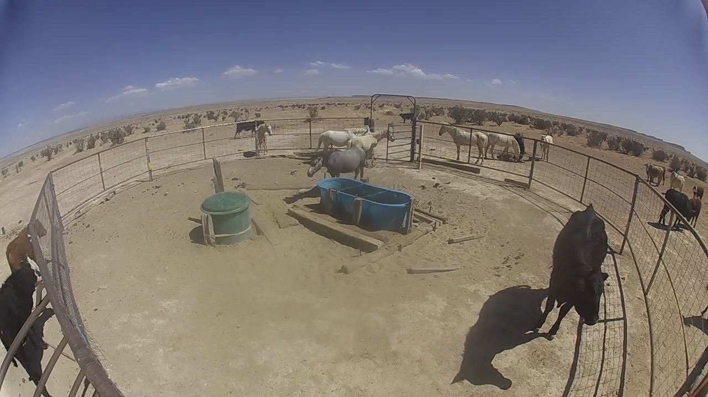

Shops & multi-location businesses
Staff reach file shares, cameras, and office systems from home or another site — without exposing them to the whole internet. Gateways and shop IoT can sit on the same private path.
Managed private network · optional private AI
LOJO is a managed private network for shops, offices, oil & gas sites, IoT, field crews, and remote ranching. Phones and laptops reach work systems. Files and controls stay off the public internet. We run the network.
Also a fit for: multi-shop trades & light manufacturing · oil & gas / field crews on cell or Starlink · and the same private-path pattern as Montano ranch control.
Field proof · New Mexico
For 8+ years, remote cattle and wild-horse trap sites have used LOJO so ranchers can open and close spring latches from a phone — over cell or Starlink — without putting control on the open internet.
Cameras stay on normal security-camera apps. LOJO carries the private path for latch and relay control only. How that deployment works →

Who it’s for
Staff reach file shares, cameras, and office systems from home or another site — without exposing them to the whole internet. Gateways and shop IoT can sit on the same private path.
Crews and contractors get into shop and site systems the safe way: private path on cell or Starlink, managed by us.

Same pattern as Montano: edge gear on LOJO, control in a browser after Connect, cameras separate.
What you get
How it works
Tell us your sites and what people need to reach.
We stand up your private network for a paid pilot.
Your team installs a simple app and taps Connect.
You work. We operate the private path.
Service offer · ranch & remote livestock
We build and run remote cattle-trap stacks for ranchers and similar operators — traps, monitoring, and the private path — so you get a working system without becoming the IT department.
Scoped to the Montano Cloud Run stack in use today — not a Flex claim.
Ranchers and similar operators who want remote trapping built and run for them — not a DIY kit.
Or use the general LOJO pilot mailto if you prefer that subject line.
Pilot package
We stand up your private network for a defined set of people and sites, prove the Connect path, and leave you with a clear go / no-go — without making you the IT department.
No public price list yet — scope drives cost. Montano-style ranch control is one pattern; shops and field crews are others.
Start with a paid pilot. Write team@lojo.engineering — sites, who needs access, and when you want to start.
Request a pilot